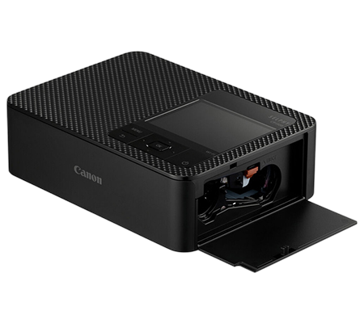
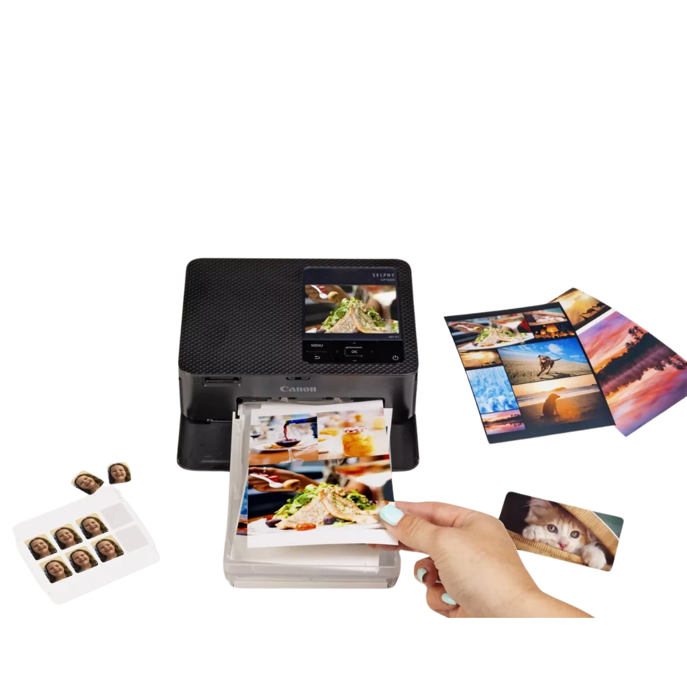
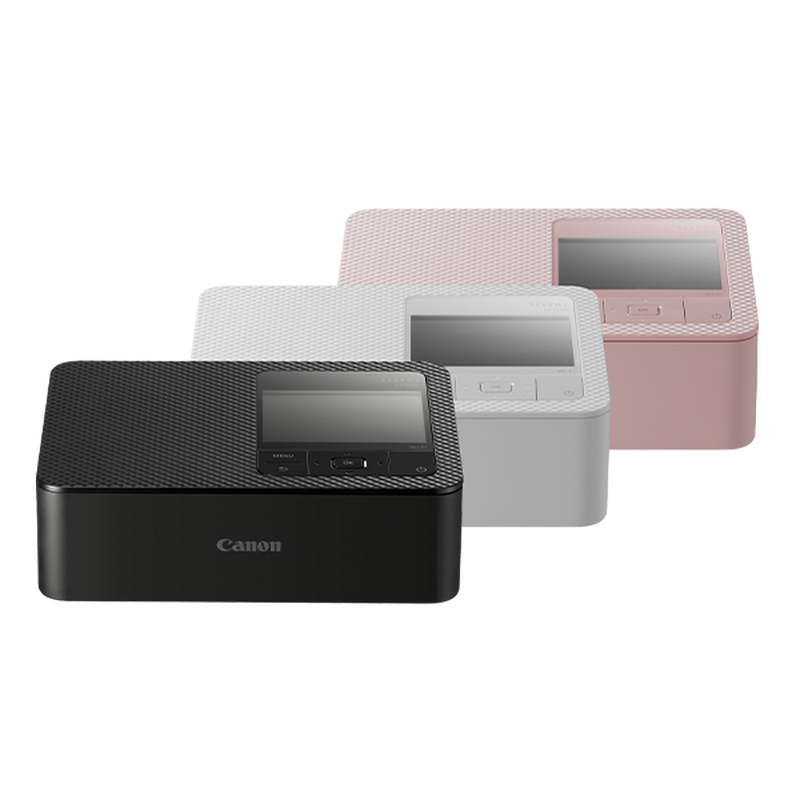
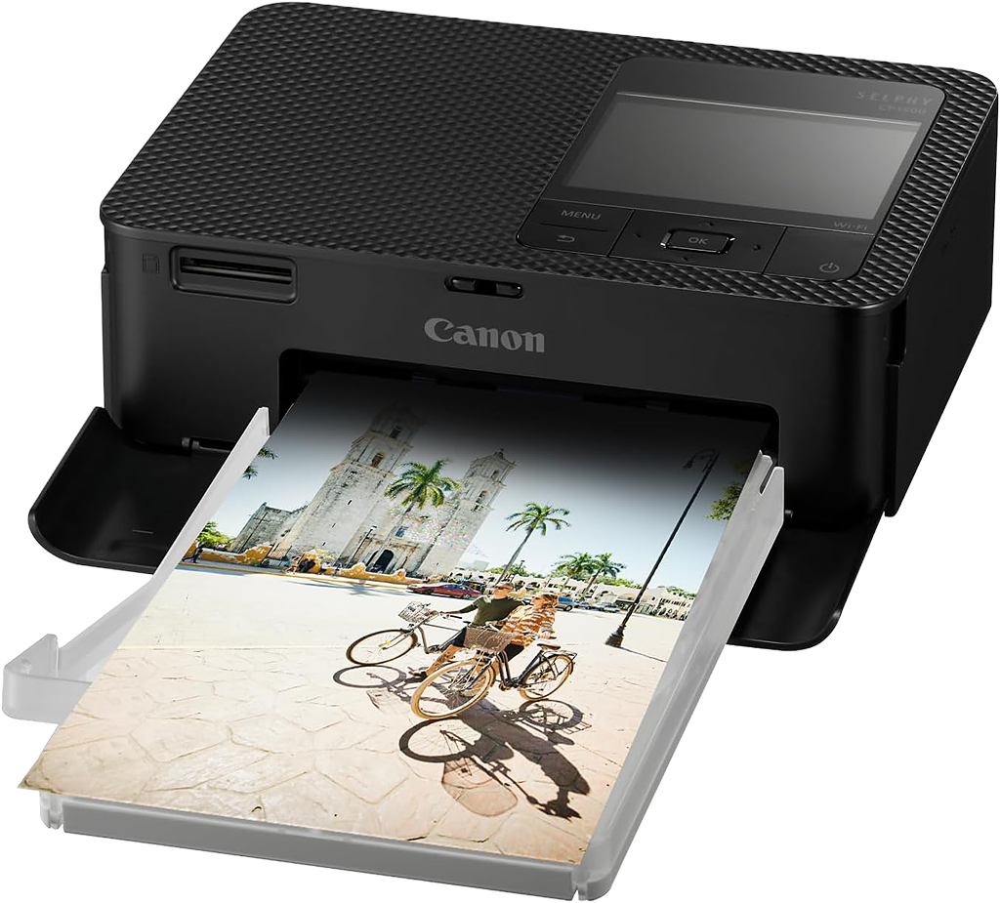

Conexion directa
Imprimi desde el celular, camara o tarjeta SD con una experiencia rapida y sin friccion.
Impresion fotografica portatil
Canon SELPHY CP1500 convierte tus fotos del celular en impresiones resistentes, nitidas y listas para regalar en menos de un minuto.

Del archivo al objeto
Imprimi desde el celular, camara o tarjeta SD con una experiencia rapida y sin friccion.
El acabado final resiste salpicaduras, huellas y desgaste para conservar el color.
Postales, collages, stickers y mini formatos con un acabado compacto y premium.
Diseno compacto, presencia premium
La CP1500 usa un proceso de sublimacion que deposita color por capas y aplica una proteccion final. El resultado: tonos suaves, pieles mas naturales y copias que sobreviven al uso real.

Tres pasos
Selecciona fotos desde la app SELPHY Photo Layout.
Suma bordes, QR, filtros o collages en segundos.
Obtene una copia seca, brillante y lista para compartir.

Formatos creativos

Un cuerpo compacto con presencia sobria, ideal para escritorio, eventos y setups creativos.

Pantalla inclinable y controles directos para imprimir rapido.
Ficha rapida
Canon SELPHY CP1500
Una landing reconstruida para vender una experiencia: rapida, elegante, portable y profundamente tangible.
Preguntas frecuentes
No. Podés imprimir desde el celular con la app SELPHY Photo Layout, además de usar USB-C o tarjeta SD.
Sí. La copia sale lista para tocar, compartir o guardar gracias al proceso de sublimación y capa protectora.
Sí. Es compacta, rápida y perfecta para recuerdos físicos en cumpleaños, bodas, viajes o reuniones.
Fotos tamaño postal, tarjetas, mini stickers y composiciones creativas según el papel compatible.